Designer & Researcher
I design and study interactive systems.
Projects
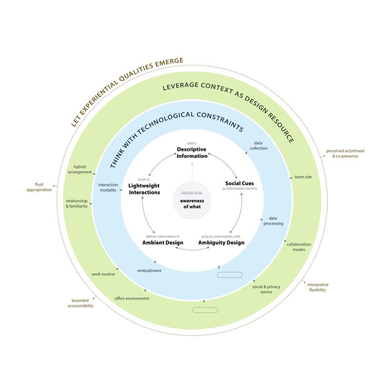
Designing awareness for hybrid teams
PhD research on displays that share office presence with remote colleagues
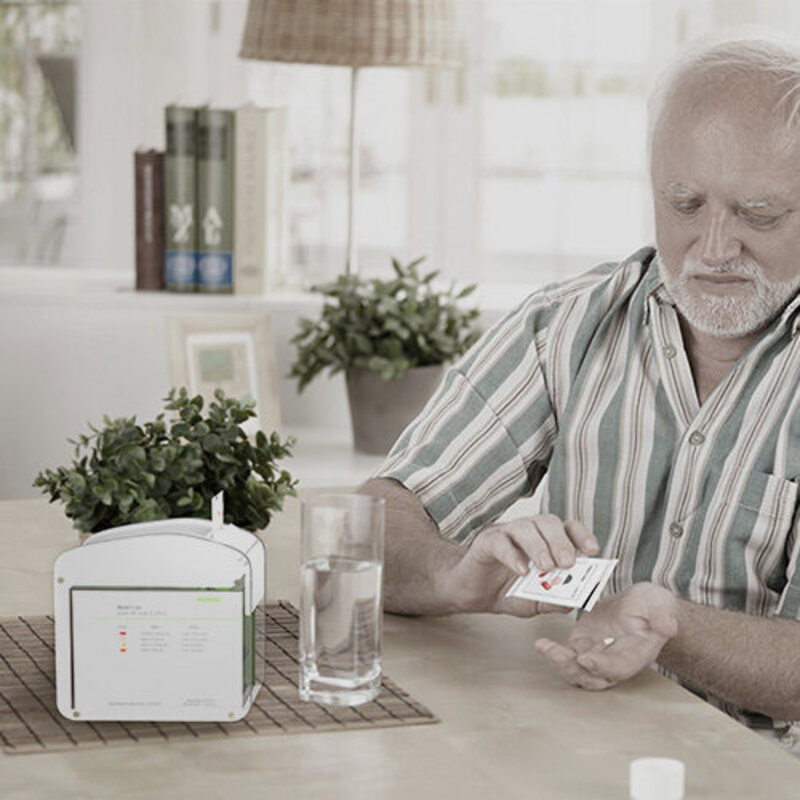
MedEase
Pill box and packaging for taking medication on time
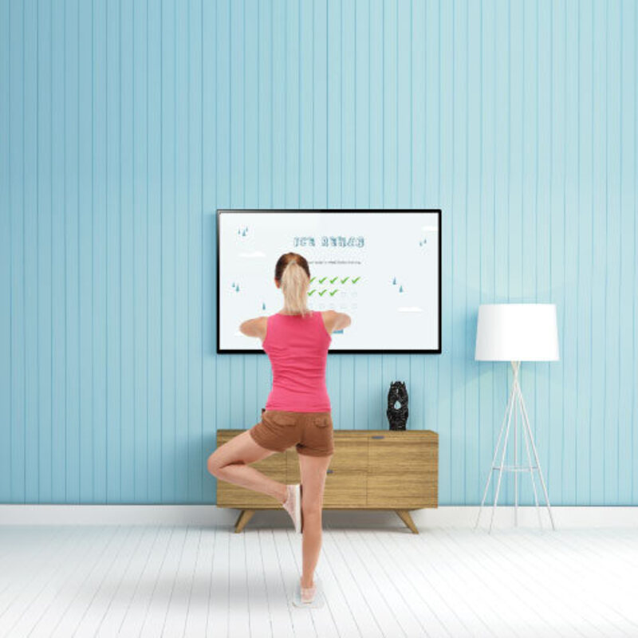
IceRehab
Balance game for ankle rehabilitation
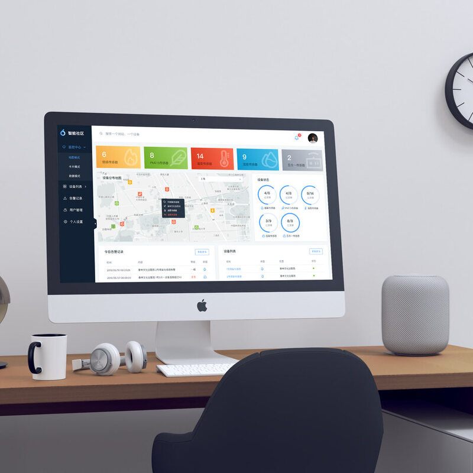
Sensor monitoring console
Dashboard for a building sensor network
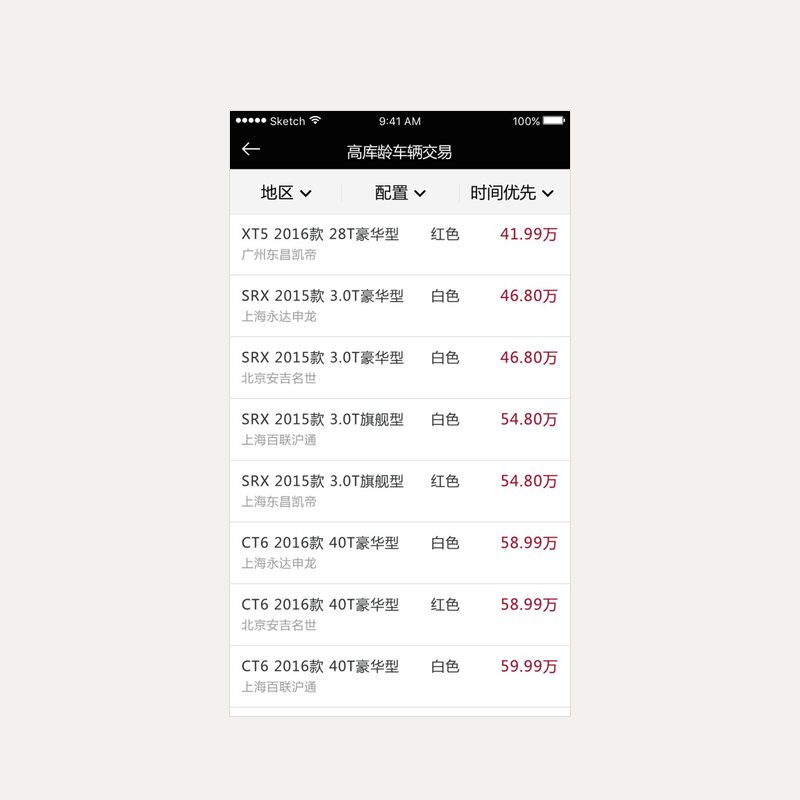
Cadillac dealer platform
Sales platform for a car dealer network
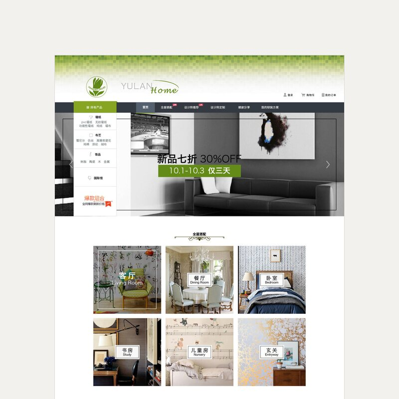
Yulan Home
Online shop for wallpaper, fabric and home accessories
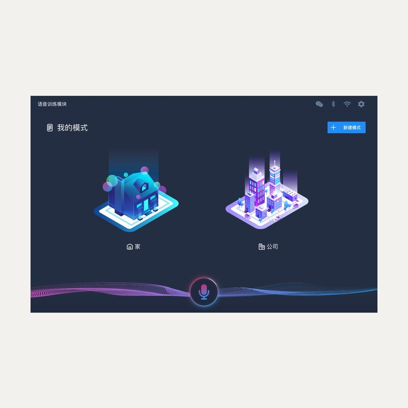
Voice-controlled home screen
Screen for a smart-home voice assistant
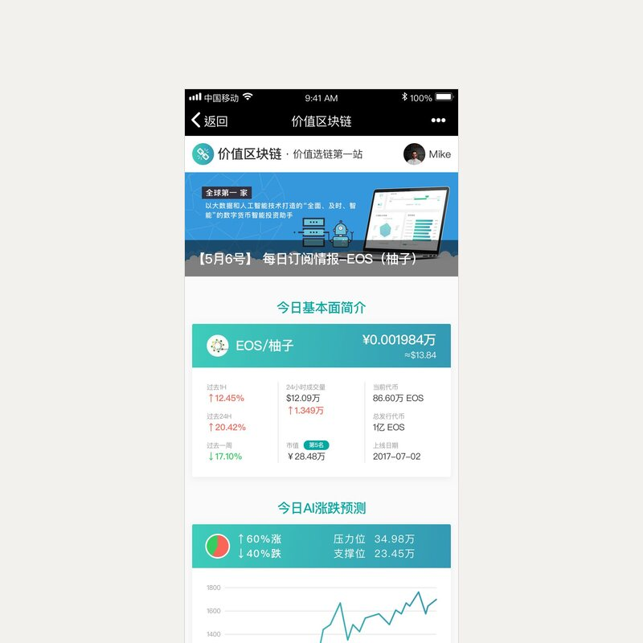
Daily briefing subscription
Mobile market briefing with a free and a paid version
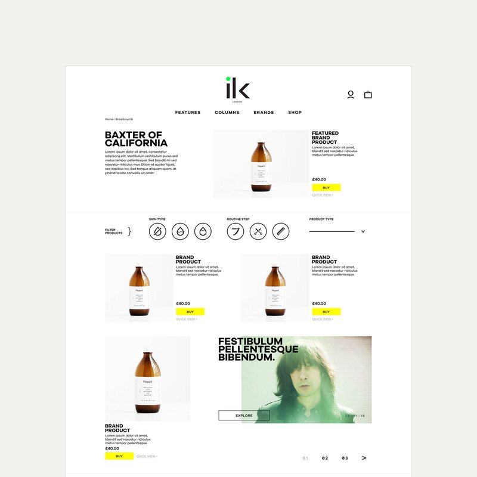
ilk London
Online shop for men's grooming products
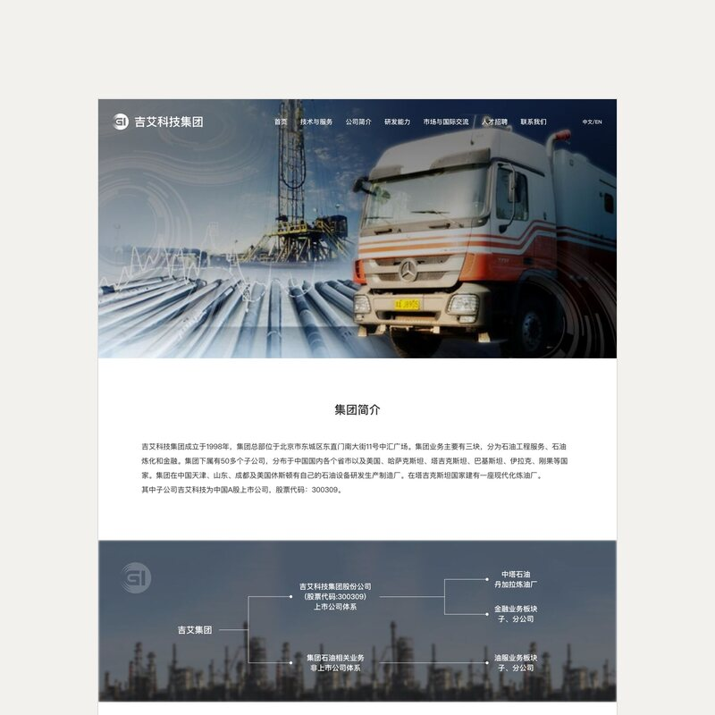
Industrial group website
Corporate site for an oil-services group
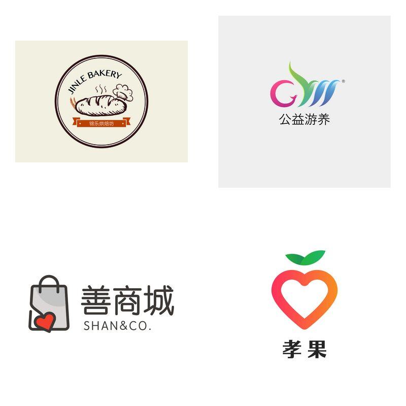
Identity marks
Logos for small businesses and non-profits
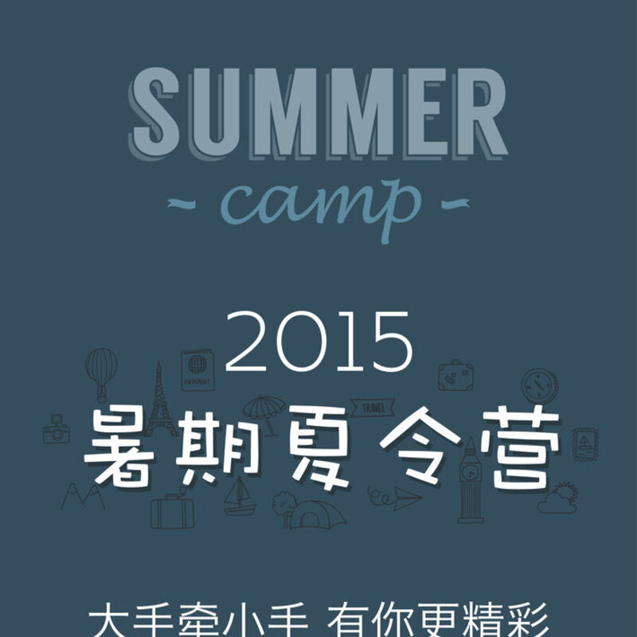
Posters and product graphics
Campaign poster and product graphics
About
What I do
I am finishing a PhD in Industrial Design at Eindhoven University of Technology, on a single question: how a system can carry information about other people without becoming another thing demanding attention. My work is published at ACM CSCW, DIS, CHI, NordiCHI and IASDR.
I work across the whole arc of a project. I run exploratory and semi-structured interviews, facilitate co-design and speculative workshops, and design the interaction and the interface that come out of them. I plan and run the evaluations too — comparative lab studies, usability sessions, surveys, and deployments in people's own workplaces — and analyse them with thematic analysis and statistics. When an existing instrument gets in the way, I build a better one.
I prototype in code. Every system I have evaluated, I also built: HTML, CSS and JavaScript, Python, Raspberry Pi and sensors. It means I bring engineers something running rather than a screenshot, and I can tell early whether a design idea is cheap or expensive. Before the PhD I designed for SAP, Netease Games, BBH London and Lenovo, and independently for startups, an NGO and an industrial IoT company — brand identity and visual systems at one end, dense operational dashboards at the other. Some of that work is collected here.
Contact
Get in touch
I am open to new work opportunities, including relocation.